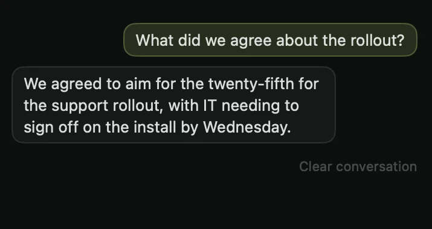
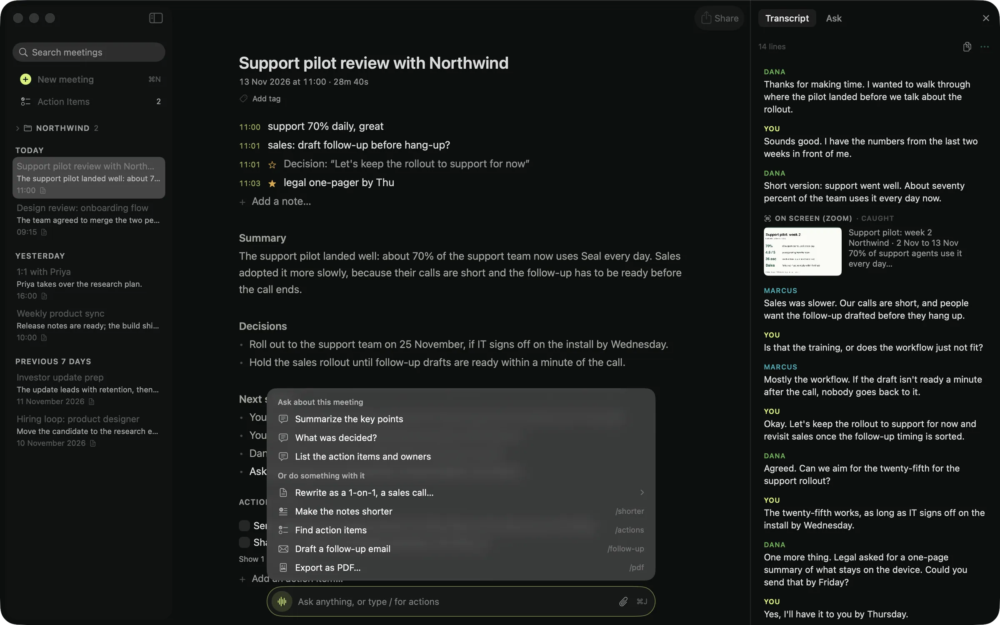

10:59Before
Zoom turns on your microphone.
Seal notices and offers to record. A small tab waits at the edge of your screen: pause, stop, snap a slide, star a moment. Nothing joins the call.


Seal hears both sides of the call, writes the notes and answers your questions, all on your Mac. No bot, no cloud, no account.
macOS 14+ · Apple silicon · 0 bytes sent

Follow one real-looking meeting from the moment the call starts to the moment the notes are sealed. Every screen below is the actual app.
Seal notices and offers to record. A small tab waits at the edge of your screen: pause, stop, snap a slide, star a moment. Nothing joins the call.
Your microphone and the call's audio, on your Mac. English, Ukrainian, or both in the same call. Voices are told apart, so the notes say Dana and Marcus.
When a new slide appears on the call, Seal reads it and keeps it beside the transcript, so the notes can use it. Video tiles are ignored.

You missed a sentence while answering a message. Ask, and the answer comes from everything said so far, in seconds, without leaving the Mac.

“We agreed to aim for the twenty-fifth for the support rollout, with IT needing to sign off on the install by Wednesday.”
A summary, the decisions, next steps and action items, written on your Mac. Your own lines stay in your ink and the model's in a quieter one, so you always know who wrote what.

Seal has no server to send your meetings to, and it works with Wi-Fi off. Here is every connection the app makes, so you can check it with any network monitor.
Search every meeting by meaning, file them in folders, draft the follow-up, export to Markdown, PDF, Word, SRT or VTT. Your notes are plain files you own.

Most AI note-takers are cloud services wearing an app. Seal is a Mac app. Named comparisons: Granola, Otter.ai.
| Question | Seal | Cloud note-takers |
|---|---|---|
| Where your audio is processed | On your Mac | On their servers |
| A bot in your call | Never | Usually a visible participant |
| Account required | None | Sign-up first |
| Works offline | Fully | Needs a connection |
| Your meeting history | Files on your Mac | Held in their cloud |
| What you pay | Nothing | A monthly subscription |
| If the company disappears | The app keeps working | The service usually stops |
No. Recording, transcription and notes all run on your Mac, and Seal has no server to send meetings to. If you choose to turn on a cloud model with your own API key, only transcript text is sent, never your audio, and transcription always stays on the Mac.
macOS 14 or later and an Apple-silicon Mac. The models download once, roughly 3 to 6 GB together, the first time you record and make notes. After that nothing needs the network.
Yes, all of it. No meeting limits, no trial, no account, no subscription.
Seal runs on your Mac, so it costs nothing when you use it. Cloud note-takers charge monthly because every minute you record costs them money; Seal doesn't have that meter.
Free to download. Free to use. Sealed by design.
One short email when a new version ships. This list belongs to the website; the app never asks who you are.